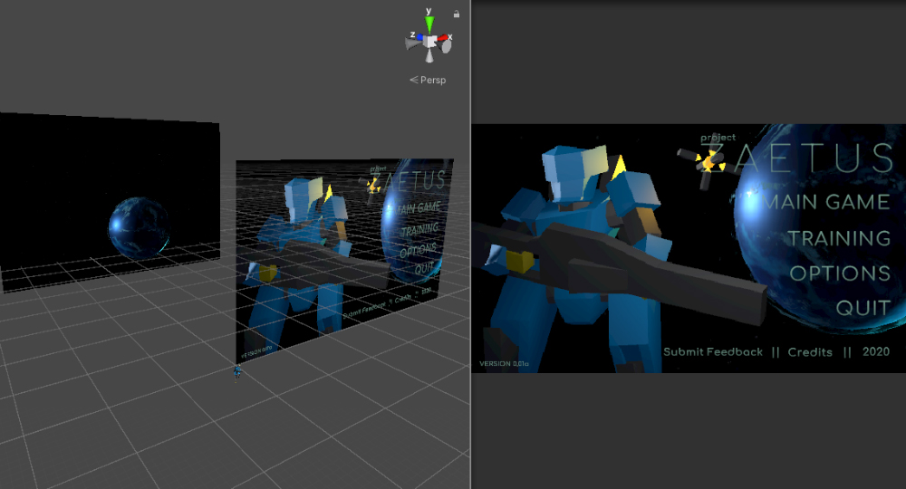
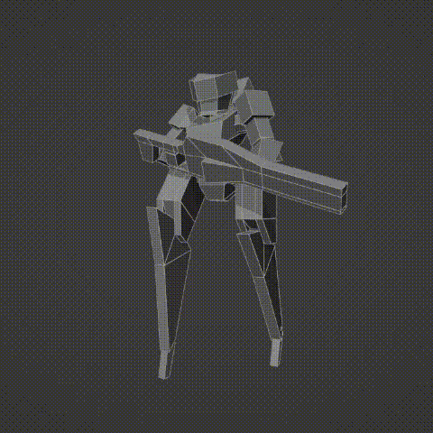

The emergence of Project Zaetus began from an interest in wanting to learn the game development pipeline. I knew how to draw things, but I didn't know how they would be translated into 3d, or even a game engine. Seemed like good information to know. I chose Unity as the engine as it seemed the most approachable with lots of documentation and pre-existing tutorials of all kinds to help me get started.
Above: The main menu (right) and what it looks like in the Unity Editor (left)
Unfortunately, there isn't much left of the early game-development stages of this particular game. I think as I developed the game, I would delete old maps, or modify them with updated models and other testing areas. I didn't know about version control at that time either. Thankfully, I did manage to find the old Unity project file that contained all of the working files at the time of saving. That and I did come across some old sketchbook work that I did prior to its actual development.
The player would pilot a mechanized suit that would be transported from planet to planet in this fictional galaxy to fight off incoming enemy forces. The mech features robust leg modules as it would have to endure lots of ground movement. Ontop of that, it would need some sort of jet booster module on its back to aid with faster transport (running, sliding) or vertical movement (jumping). To the right are some very very early when the idea was just a vague collection of imaginations, exploring a character that I thought would be cool to control and save the galaxy with.
The 3D model translation from those initial sketches seemed to have taken a dramatic turn, going from dynamic and sharp styling, into a very low-poly look. This wasn't on accident. As it was my first real jump into the world of rigging and animating characters, 1. I didn't want to over complicate the modeling process and spend weeks figuring out the character. And 2. At the time, because I was inspired by Star Fox 64, as well as other mech games around that time period, the graphical fidelity didn't rely so much on the modeling but rather the texturing. Models would be simple, yet the textures would have all the definition. I didn't want the scope to inflate before I even started making the game.
Approaching it in this manner allowed me to learn about rigging in a very simple and approachable way. Would I go back and redesign the mech these days? Sure, but at the time, it was good enough for what I was looking to do. From here, once the base model was finished, I rigged it up and started animating! This part was actually quite fun --There's something satisfying about bringing a model to life, thinking about how it will move, how will it hold things, and how the different parts will react to being used in certain ways.
We were taught a little bit of 3D animation in my Intro to Maya course in college, and so I wasn't completely in the dark with getting the animations going the way I wanted to, thankfully. Don't ask me why I gave a robot a "breathing" idle animation. I remember enjoying animating the running animation a lot, though I don't remember why in particular.

From here, it was just a matter of getting started: importing the model into the Unity engine and setting up the necessary systems to have the mech move around and animate according to the movement. I remember it was a little confusing getting it all set up and working properly --having to look up a few online tutorials. But I eventually got it with enough scouring of the internet. In hindsight, I should have split the lower torso from the upper torso (we'll see why later on), but overall it felt like I was making some decent progress.
Also before moving on, I want to introduce PIA, the Zaetus mech's Personal Integrated Assistant. Essentially, I wanted Zaetus' gun to be a rail-gun of sorts that would be incredibly powerful, yet would need time to charge. To offset the cooldown period, I wanted to introduce an alternate weapon --a helper drone that would follow you around and could provide rapid-fire, low damage projectiles while you wait for the rifle's cooldown. This helper drone is named PIA, and would help notify you in certain scenarios. I used a free text-to-speech to generate some of its voicelines.